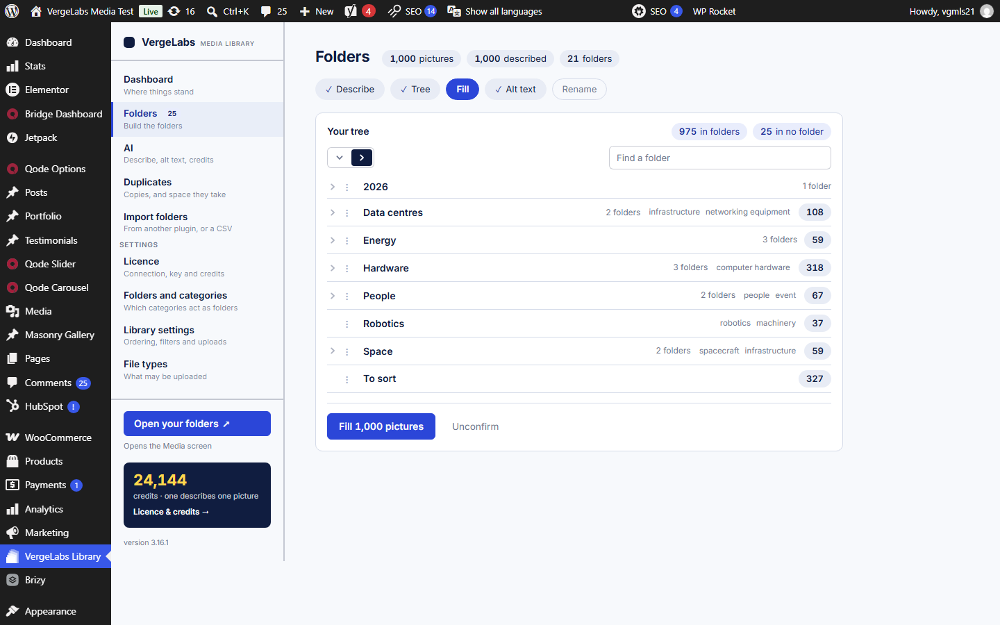
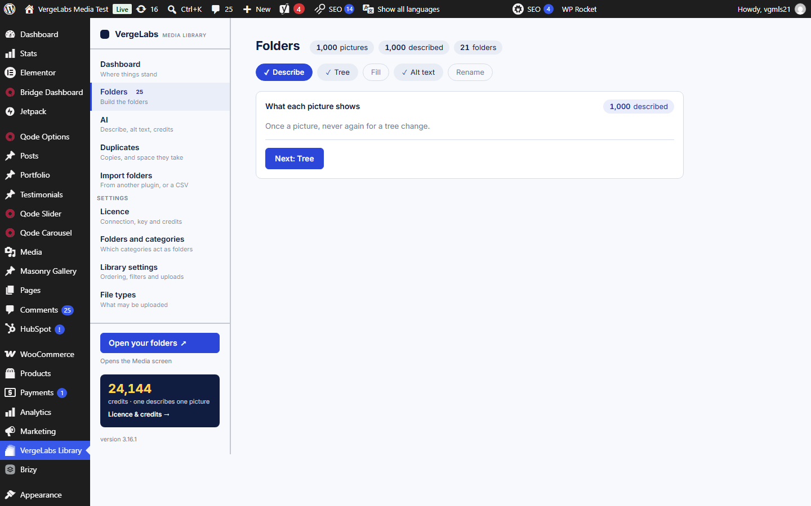
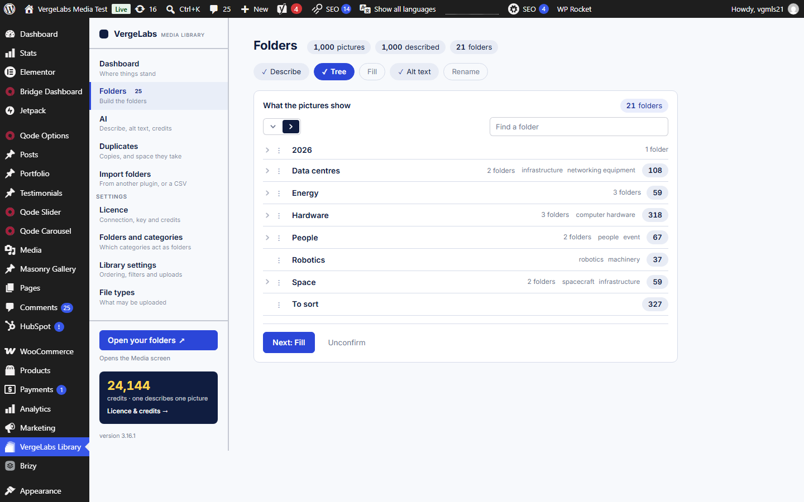
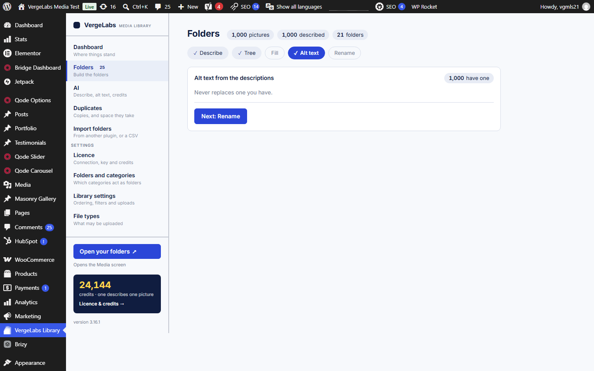
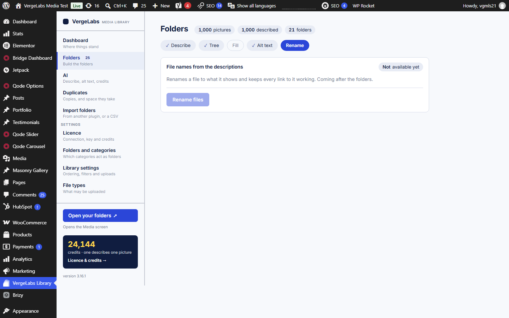
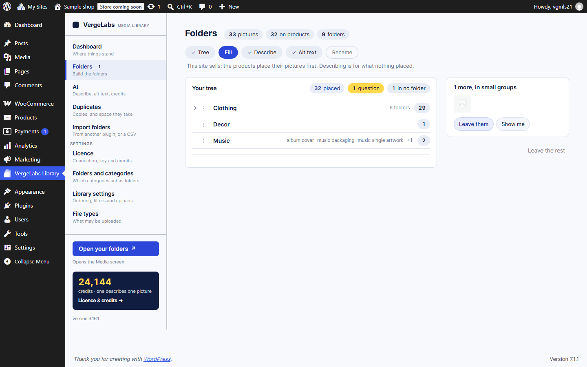
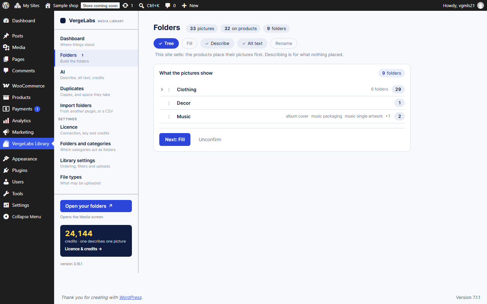
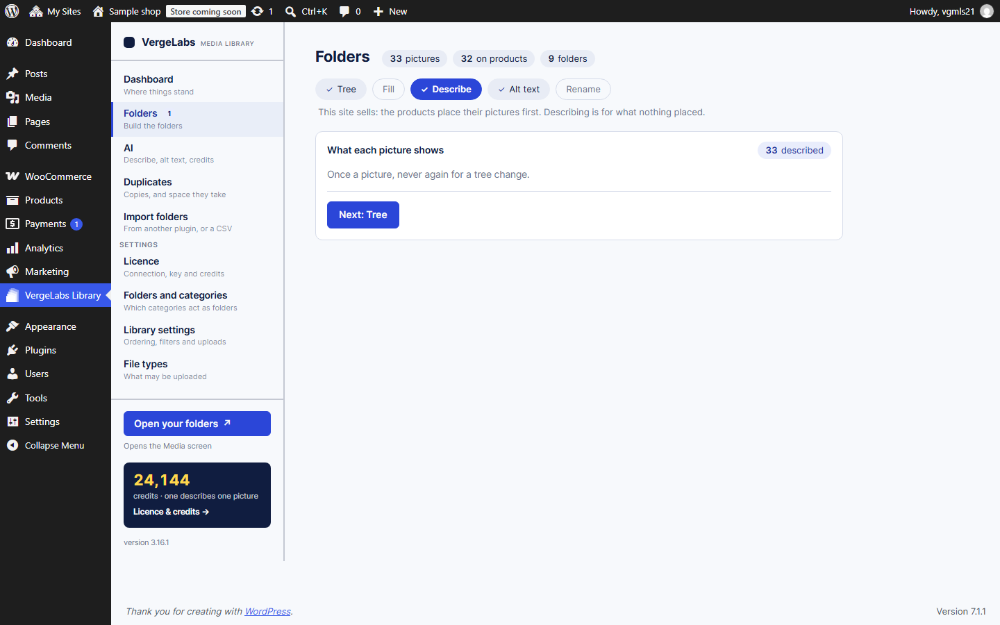
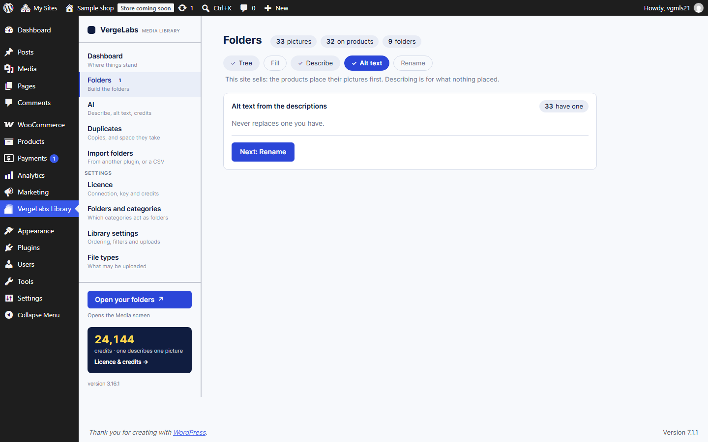
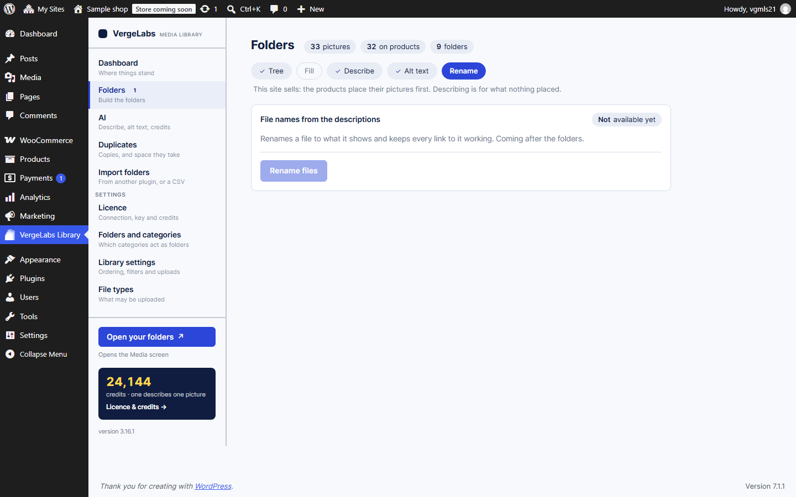

The Folders screens
2026-09-19 · every rail step on both libraries, shot at 1440×900. Nothing was confirmed, filled or answered to make these.
The tech library
1,000 pictures, no shop: the rail is Describe · Tree · Fill · Alt text · Rename.





The real shop
33 pictures, 27 products, 9 categories: the rail turns round -- Tree · Fill · Describe.




